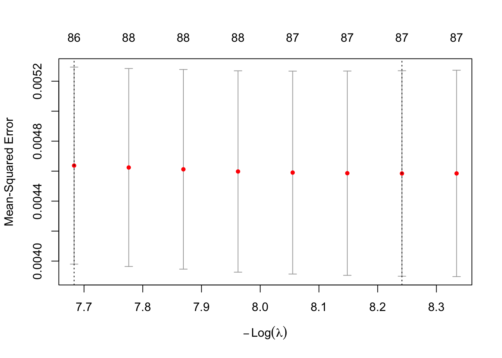
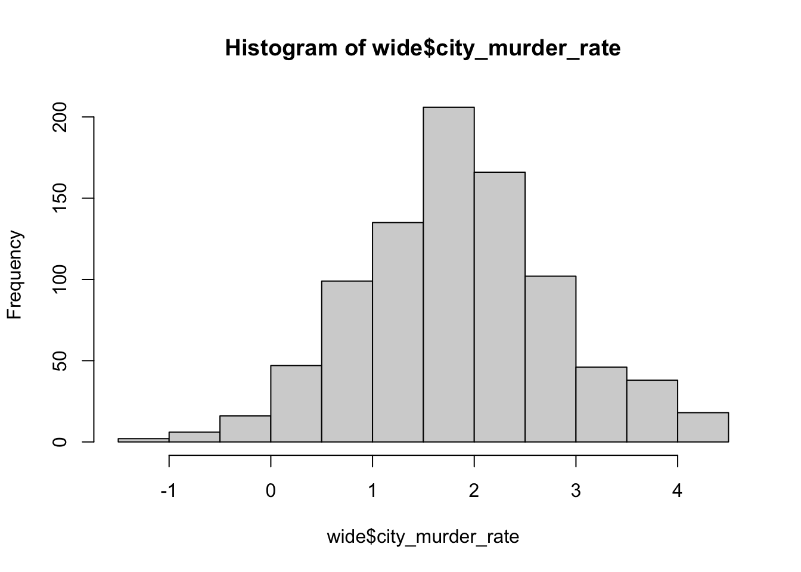

suppressPackageStartupMessages({
library(tidyverse)
library(glmnet) # LASSO variable selection
library(sandwich) # cluster-robust covariance
library(lmtest) # coeftest() with a supplied vcov
library(broom)
})
set.seed(123)
options(scipen = 999, digits = 4)Does a Sports Team’s Performance Affect Its City’s Murder Rate?
Approach
The question is whether a team performing better moves its city’s murder rate – a within-team, over-time question. Rather than four separate league models, this fits one pooled model on a stacked panel: one row per (city, year, team), with every league’s team stacked together. That keeps all the data in a single regression while avoiding the traps of the original design (forcing every league onto one metro-year row and median-imputing the missing sports values).
Key pieces:
- Outcome: each team’s own city murder rate, paired with its own performance – never averaged across leagues, never imputed.
win_pctstandardized within league (z-score), so one pooled coefficient means “effect of a 1-SD-better season” and is comparable across sports whose win percentages have very different spreads (an NFL season swings far more than a 162-game MLB season).- Team fixed effects (
factor(team_id), one intercept per city-league team): the win-% effect is identified purely from a team’s year-to-year swings, so stable differences between teams/cities (big cities have teams and more crime) cannot drive it. - Year fixed effects for nationwide crime trends, and SEs clustered by metro since a metro’s rows (across years and leagues) are correlated.
A pooled model without team fixed effects (league intercepts only) is shown alongside, so the confounding the fixed effects remove is visible.
raw <- read_csv("data/metro_acs_model_ready_2010_2023.csv", show_col_types = FALSE) %>%
mutate(across(c(year, GEOID), as.integer)) %>%
# The panel is supposed to be one row per (GEOID, year), but 24 metro-years
# arrive twice -- these are metros with two teams in one league (e.g. two
# college-football programs), each row carrying that league's own numbers.
# Collapse them to a single metro-year (mean of the numeric columns) so every
# downstream step -- the log(), the NBA join, and especially the league
# pivot_wider in the encode-win chunk -- gets the unique key it assumes.
group_by(GEOID, year) %>%
summarise(across(where(is.numeric), ~ mean(.x, na.rm = TRUE)),
across(!where(is.numeric), first), .groups = "drop")
# --- NBA as a full league ---------------------------------------------------
# The model-ready panel shipped only a `has_NBA` flag, not NBA performance, so
# NBA is built here from its raw files and joined in as nfl/mlb/nhl/cfb already
# are: one nba_win_pct / nba_make_playoffs / nba_make_playoffs_prev /
# nba_murder_rate per (GEOID, year). Teams are crosswalked to metros via the
# CBSA principal-city name, restricted to the metros already in the panel.
nba_cols <- local({
cb <- read_csv("data/metro_acs_2022_cbsa.csv", show_col_types = FALSE) %>%
dplyr::select(GEOID, NAME) %>% mutate(GEOID = as.integer(GEOID))
stats <- read_csv("data/NBA/nba_team_stats_2003_2023.csv", show_col_types = FALSE)
mur <- read_csv("data/NBA/nba_cities_murder_rates_2003_2026.csv", show_col_types = FALSE)
apps <- read_csv("data/NBA/nba_playoff_appearances_since_2003.csv", show_col_types = FALSE)
# principal city of each panel metro (e.g. "Atlanta-Sandy Springs..." -> "Atlanta")
panel <- raw %>% distinct(GEOID) %>% left_join(cb, by = "GEOID") %>%
mutate(city = NAME %>% str_remove(",.*$") %>% str_remove("-.*$"))
norm <- function(x) x %>% str_replace("New York City", "New York") %>%
str_replace("Washington D.C.", "Washington")
xwalk <- mur %>% distinct(City) %>% mutate(city = norm(City)) %>%
inner_join(panel, by = "city") %>% dplyr::select(City, city, GEOID)
# team -> GEOID: current names via the murder file, with a city-name-prefix
# fallback so relocated/renamed franchises (e.g. Charlotte Bobcats) still map
team2geo <- mur %>% distinct(`NBA Team`, City) %>% inner_join(xwalk, by = "City") %>%
dplyr::select(team = `NBA Team`, GEOID)
city_lut <- xwalk %>% distinct(city, GEOID)
resolve <- function(teams) {
g <- team2geo$GEOID[match(teams, team2geo$team)]
fb <- map_int(teams, function(t) {
hit <- str_starts(t, fixed(city_lut$city))
if (any(hit)) city_lut$GEOID[hit][which.max(nchar(city_lut$city[hit]))] else NA_integer_
})
ifelse(is.na(g), fb, g)
}
# metro-year aggregates (multiple teams in a metro are averaged; playoffs = any)
win <- stats %>% mutate(GEOID = resolve(team)) %>% filter(!is.na(GEOID)) %>%
group_by(GEOID, year) %>% summarise(nba_win_pct = mean(win_loss_perc), .groups = "drop")
po <- apps %>% separate_rows(Years, sep = "; ") %>%
mutate(year = as.integer(Years), GEOID = resolve(Team)) %>% filter(!is.na(GEOID)) %>%
distinct(GEOID, year) %>% mutate(nba_make_playoffs = 1L)
mrd <- mur %>% inner_join(xwalk, by = "City") %>% group_by(GEOID, Year) %>%
summarise(nba_murder_rate = mean(`Murder Rate (per 100k)`), .groups = "drop") %>%
rename(year = Year)
win %>%
full_join(po, by = c("GEOID", "year")) %>%
full_join(mrd, by = c("GEOID", "year")) %>%
mutate(nba_make_playoffs = replace_na(nba_make_playoffs, 0L)) %>%
arrange(GEOID, year) %>% group_by(GEOID) %>%
mutate(nba_make_playoffs_prev = lag(nba_make_playoffs)) %>% ungroup()
})
raw <- raw %>% left_join(nba_cols, by = c("GEOID", "year"))
# ---------------------------------------------------------------------------
# Time-varying census controls (metro-level). Fixed effects absorb everything
# time-invariant, and each concept appears once (rates, not the raw counts they
# are built from) to avoid the rank-deficiency the earlier all-columns model hit.
controls <- c("log_income", "unemployment_rate", "poverty_rate",
"log_home_value", "log_pop",
"race_black_nonhispanic_rate", "hispanic_or_latino_rate",
"bachelors_plus_rate", "pop_18_to_64_rate")
base <- raw %>%
mutate(
log_income = log(median_household_income),
log_home_value = log(median_home_value),
log_pop = log(total_population),
# log the murder rate once here at the top -- every per-sport rate has no
# zeros (min 0.28), so plain log() is safe. All downstream outcomes
# (murder_rate in `long`/`enc`, city_murder_rate in `wide`) are therefore
# already on the log scale and the model formulas need no log() themselves.
across(ends_with("_murder_rate"), log)
)raw# A tibble: 891 × 60
GEOID year sports_team_count has_NFL has_NBA has_MLB has_NHL has_pro_team
<int> <dbl> <dbl> <dbl> <dbl> <dbl> <dbl> <dbl>
1 11460 2012 0 0 0 0 0 0
2 11460 2013 0 0 0 0 0 0
3 11460 2014 0 0 0 0 0 0
4 11460 2015 0 0 0 0 0 0
5 11460 2016 0 0 0 0 0 0
6 11460 2017 0 0 0 0 0 0
7 11460 2018 0 0 0 0 0 0
8 11460 2019 0 0 0 0 0 0
9 11460 2020 0 0 0 0 0 0
10 11460 2021 0 0 0 0 0 0
# ℹ 881 more rows
# ℹ 52 more variables: power4_school_count <dbl>, has_power4_school <dbl>,
# mlb_avg_temp <dbl>, mlb_win_pct <dbl>, mlb_make_playoffs <dbl>,
# mlb_make_playoffs_prev <dbl>, mlb_murder_rate <dbl>, nfl_avg_temp <dbl>,
# nfl_win_pct <dbl>, nfl_make_playoffs <dbl>, nfl_make_playoffs_prev <dbl>,
# nfl_murder_rate <dbl>, nhl_avg_temp <dbl>, nhl_win_pct <dbl>,
# nhl_make_playoffs <dbl>, nhl_make_playoffs_prev <dbl>, …unique(colnames(raw)) [1] "GEOID" "year"
[3] "sports_team_count" "has_NFL"
[5] "has_NBA" "has_MLB"
[7] "has_NHL" "has_pro_team"
[9] "power4_school_count" "has_power4_school"
[11] "mlb_avg_temp" "mlb_win_pct"
[13] "mlb_make_playoffs" "mlb_make_playoffs_prev"
[15] "mlb_murder_rate" "nfl_avg_temp"
[17] "nfl_win_pct" "nfl_make_playoffs"
[19] "nfl_make_playoffs_prev" "nfl_murder_rate"
[21] "nhl_avg_temp" "nhl_win_pct"
[23] "nhl_make_playoffs" "nhl_make_playoffs_prev"
[25] "nhl_murder_rate" "cfb_win_pct"
[27] "cfb_make_playoffs" "cfb_make_playoffs_prev"
[29] "cfb_murder_rate" "median_household_income"
[31] "labor_force" "unemployed"
[33] "unemployment_rate" "median_home_value"
[35] "median_gross_rent" "housing_units"
[37] "owner_occupied" "homeownership_rate"
[39] "poverty_universe" "below_poverty"
[41] "poverty_rate" "edu_universe_25plus"
[43] "bachelors_plus_rate" "total_population"
[45] "race_white_nonhispanic_rate" "race_black_nonhispanic_rate"
[47] "race_aian_nonhispanic_rate" "race_asian_nonhispanic_rate"
[49] "race_nhpi_nonhispanic_rate" "race_other_nonhispanic_rate"
[51] "race_two_plus_nonhispanic_rate" "hispanic_or_latino_rate"
[53] "pop_under_18_rate" "pop_18_to_64_rate"
[55] "pop_65plus_rate" "cfb_avg_temp"
[57] "nba_win_pct" "nba_make_playoffs"
[59] "nba_murder_rate" "nba_make_playoffs_prev" leagues <- c("nfl", "mlb", "nhl", "cfb", "nba")
# Stack every league into one long panel: one row per (metro, year, team) that
# actually exists. Each league contributes its own murder rate + performance.
# This is the intermediate, team-level table -- it is then collapsed below.
team_long <- map_dfr(leagues, function(lg) {
base %>%
transmute(
GEOID, year, league = toupper(lg),
murder_rate = .data[[paste0(lg, "_murder_rate")]],
win_pct = .data[[paste0(lg, "_win_pct")]],
make_playoffs = .data[[paste0(lg, "_make_playoffs")]],
make_playoffs_prev = .data[[paste0(lg, "_make_playoffs_prev")]],
across(all_of(controls))
) %>%
filter(!is.na(murder_rate), !is.na(win_pct))
}) %>%
# standardize win % WITHIN league so a pooled coefficient = effect of a
# 1-SD-better season, comparable across sports
group_by(league) %>%
mutate(win_pct_z = as.numeric(scale(win_pct))) %>%
ungroup() %>%
# lagged (previous-season) standardized win %, within each team
mutate(team_id = paste(GEOID, league, sep = "_")) %>%
group_by(team_id) %>%
arrange(year, .by_group = TRUE) %>%
mutate(win_pct_prev_z = lag(win_pct_z)) %>%
ungroup() %>%
# drop NA on every model variable so the fitted rows match the cluster vector
drop_na(all_of(c("win_pct_z", "win_pct_prev_z", "make_playoffs",
"make_playoffs_prev", "murder_rate", controls)))
# Collapse to ONE observation per (metro, year): the 2015 Knicks and 2015 Giants
# stop being two separate rows and become a single 2015 row for their metro.
# Each team's within-league-standardized performance is AVERAGED across the
# metro's teams; the playoff flags become the SHARE of the metro's teams that
# made the playoffs; the murder rate is the mean of the present teams' city
# rates. Census controls are metro-level, so they are identical across a metro's
# teams -- first() just carries one copy through.
long <- team_long %>%
group_by(GEOID, year) %>%
summarise(
n_teams = n(),
# murder_rate is already logged (base logs every *_murder_rate once, up top),
# so averaging the present teams' logged city rates keeps the metro-year
# outcome on the log scale -- same construction as wide's city_murder_rate.
murder_rate = mean(murder_rate),
win_pct_z = mean(win_pct_z),
win_pct_prev_z = mean(win_pct_prev_z),
make_playoffs = mean(make_playoffs), # share of teams making playoffs
make_playoffs_prev = mean(make_playoffs_prev),
across(all_of(controls), first),
.groups = "drop"
)
tibble(
observations = nrow(long),
metros = n_distinct(long$GEOID),
years = n_distinct(long$year),
avg_teams_per_obs = round(mean(long$n_teams), 2)
)# A tibble: 1 × 4
observations metros years avg_teams_per_obs
<int> <int> <int> <dbl>
1 802 77 11 1.94count(long, n_teams)# A tibble: 5 × 2
n_teams n
<int> <int>
1 1 451
2 2 143
3 3 62
4 4 96
5 5 50long# A tibble: 802 × 17
GEOID year n_teams murder_rate win_pct_z win_pct_prev_z make_playoffs
<int> <dbl> <int> <dbl> <dbl> <dbl> <dbl>
1 11460 2013 1 0.425 -0.0767 0.283 0
2 11460 2014 1 0.457 -0.642 -0.0767 0
3 11460 2015 1 0.631 1.00 -0.642 0
4 11460 2016 1 0.525 1.00 1.00 0
5 11460 2017 1 0.673 0.283 1.00 0
6 11460 2018 1 0.663 1.00 0.283 0
7 11460 2019 1 0.770 0.643 1.00 0
8 11460 2020 1 0.956 -1.03 0.643 0
9 11460 2021 1 0.963 1.41 -1.03 1
10 11460 2022 1 1.09 1.75 1.41 1
# ℹ 792 more rows
# ℹ 10 more variables: make_playoffs_prev <dbl>, log_income <dbl>,
# unemployment_rate <dbl>, poverty_rate <dbl>, log_home_value <dbl>,
# log_pop <dbl>, race_black_nonhispanic_rate <dbl>,
# hispanic_or_latino_rate <dbl>, bachelors_plus_rate <dbl>,
# pop_18_to_64_rate <dbl>sports_terms <- c("win_pct_z", "win_pct_prev_z", "make_playoffs", "make_playoffs_prev")
rhs <- paste(c("win_pct_z", "win_pct_prev_z", "make_playoffs",
"make_playoffs_prev", controls, "factor(year)"),
collapse = " + ")
# pooled, no metro fixed effects (the "before" baseline). There is no single
# league per row any more (a metro-year mixes its leagues), so the old league
# intercepts are gone -- naive is now just the pooled cross-section.
fit_naive <- lm(as.formula(paste("murder_rate ~", rhs)), data = long)
# the same model WITH one fixed effect per metro (was per team; a metro-year is
# now one row, so the team FE collapses to a metro FE)
fit_fe <- lm(as.formula(paste("murder_rate ~", rhs, "+ factor(GEOID)")), data = long)
# metro-clustered coefficients for the sports terms
clustered <- function(fit) {
V <- sandwich::vcovCL(fit, cluster = long$GEOID, type = "HC1")
broom::tidy(lmtest::coeftest(fit, vcov. = V)) %>%
filter(term %in% sports_terms)
}Variable selection: LASSO (fixed effects forced in)
Before trusting the regression, LASSO is run over every predictor – the sports terms and the census controls – to see which survive penalization. The team and year fixed effects are included in the same design matrix but forced in unpenalized (penalty.factor = 0), so LASSO can never drop a fixed effect; it only chooses among the substantive variables on top of the fixed effects. If the sports terms carry real signal, they should survive; if they are noise, LASSO should shrink them away.
lasso_form <- as.formula(
paste("~", paste(c(sports_terms, controls, "factor(year)", "factor(GEOID)"),
collapse = " + ")))
X <- model.matrix(lasso_form, data = long)[, -1]
y <- long$murder_rate
# 0 = forced in (the fixed-effect dummies), 1 = penalized/selectable (everything else)
is_fe <- grepl("^factor\\(year\\)|^factor\\(GEOID\\)", colnames(X))
penalty <- ifelse(is_fe, 0, 1)
cat(ncol(X), "columns |", sum(is_fe), "fixed-effect dummies forced in |",
sum(!is_fe), "penalized (sports + census)\n")99 columns | 86 fixed-effect dummies forced in | 13 penalized (sports + census)set.seed(123)
cv_lasso <- cv.glmnet(X, y, alpha = 1, penalty.factor = penalty, nfolds = 10)
plot(cv_lasso)
# substantive (non-fixed-effect) variables LASSO keeps at each lambda
kept <- function(s) {
co <- coef(cv_lasso, s = s)[, 1]
co <- co[co != 0 & !grepl("^factor\\(|Intercept", names(co))]
tibble(variable = names(co), coefficient = round(co, 4))
}cat("--- kept at lambda.min (looser) ---\n"); print(kept("lambda.min"))--- kept at lambda.min (looser) ---# A tibble: 1 × 2
variable coefficient
<chr> <dbl>
1 bachelors_plus_rate -0.0001cat("\n--- kept at lambda.1se (parsimonious) ---\n")
--- kept at lambda.1se (parsimonious) ---k1 <- kept("lambda.1se")
if (nrow(k1) == 0) cat("(none -- only the fixed effects survive)\n") else print(k1)(none -- only the fixed effects survive)At the parsimonious lambda.1se, no sports or census variable survives – the team and year fixed effects alone explain the murder rate, and nothing else earns its place. At the looser lambda.min a few variables enter, but the sports coefficients are tiny. Either way LASSO is telling the same story the regression does: performance adds essentially nothing beyond who the team is and what year it is.
Post-LASSO regression
The regression is then refit on the LASSO-selected variables (lambda.min) plus the forced-in fixed effects, and the sports terms among the survivors are reported with metro-clustered SEs – so any performance effect that cleared selection still faces honest inference.
selected <- kept("lambda.min")$variable
selected_sports <- intersect(selected, sports_terms)
selected_ctrls <- intersect(selected, controls)
post_rhs <- paste(c(selected_sports, selected_ctrls,
"factor(year)", "factor(GEOID)"), collapse = " + ")
post_fit <- lm(as.formula(paste("murder_rate ~", post_rhs)), data = long)
V <- sandwich::vcovCL(post_fit, cluster = long$GEOID, type = "HC1")
broom::tidy(lmtest::coeftest(post_fit, vcov. = V)) %>%
filter(term %in% sports_terms) %>%
mutate(across(where(is.numeric), ~round(.x, 4)))# A tibble: 0 × 5
# ℹ 5 variables: term <chr>, estimate <dbl>, std.error <dbl>, statistic <dbl>,
# p.value <dbl>The one big model: sports effects (naive vs. metro fixed effects)
The outcome is log murder rate, so each coefficient is roughly a proportional effect: a coefficient of b means about a 100 * b% change in the murder rate. win_pct_z is thus the effect of a 1-SD-better season, averaged across the metro’s teams, on the (log) murder rate; the playoff terms are now the share of the metro’s teams that reached the playoffs. The naive column is the pooled cross-section; the FE column adds a fixed effect for every metro, with SEs clustered by metro.
nv <- clustered(fit_naive) %>% dplyr::select(term, naive_coef = estimate, naive_p = p.value)
fe <- clustered(fit_fe) %>%
dplyr::select(term, fe_coef = estimate, fe_cluster_se = std.error, fe_p = p.value)
left_join(nv, fe, by = "term") %>%
mutate(term = factor(term, levels = sports_terms)) %>%
arrange(term) %>%
mutate(across(where(is.numeric), ~round(.x, 4)))# A tibble: 4 × 6
term naive_coef naive_p fe_coef fe_cluster_se fe_p
<fct> <dbl> <dbl> <dbl> <dbl> <dbl>
1 win_pct_z -0.0261 0.285 -0.0016 0.0039 0.689
2 win_pct_prev_z -0.0299 0.249 0.0006 0.0043 0.880
3 make_playoffs 0.0842 0.202 0.0052 0.0135 0.699
4 make_playoffs_prev 0.116 0.220 -0.0019 0.0146 0.899Model fit
tibble(
model = c("naive (no metro FE)", "metro fixed effects"),
n = nrow(long),
# R^2 is dominated by the metro dummies in the FE model (each metro has its own
# intercept), so a high value mostly reflects that murder rates differ across
# cities, not covariate predictive power.
r_squared = c(summary(fit_naive)$r.squared, summary(fit_fe)$r.squared),
adj_r_squared = c(summary(fit_naive)$adj.r.squared, summary(fit_fe)$adj.r.squared)
)# A tibble: 2 × 4
model n r_squared adj_r_squared
<chr> <int> <dbl> <dbl>
1 naive (no metro FE) 802 0.781 0.775
2 metro fixed effects 802 0.997 0.996Model without the sports factors
Three specifications side by side: the sports factors alone (no controls, no fixed effects), the controls + fixed effects with no sports, and the full model. If the performance variables carry real signal, the sports-only model explains a meaningful share of the variance on its own, and adding sports to the controls-plus-FE model lowers the MSE noticeably. If they are noise, the sports-only MSE is barely below the raw variance of the outcome, and the no-sports and full models are essentially tied.
no_sports_rhs <- paste(c(controls, "factor(year)", "factor(GEOID)"), collapse = " + ")
sports_only_rhs <- paste(sports_terms, collapse = " + ")
fit_no_sports <- lm(as.formula(paste("murder_rate ~", no_sports_rhs)), data = long)
fit_sports_only <- lm(as.formula(paste("murder_rate ~", sports_only_rhs)), data = long)
mse <- function(fit) mean(residuals(fit)^2)
tibble(
model = c("sports factors only (no controls, no FE)",
"no sports factors (controls + FE only)",
"full model (sports + controls + FE)"),
mse = c(mse(fit_sports_only), mse(fit_no_sports), mse(fit_fe))
) %>%
mutate(mse = round(mse, 4))# A tibble: 3 × 2
model mse
<chr> <dbl>
1 sports factors only (no controls, no FE) 0.834
2 no sports factors (controls + FE only) 0.0032
3 full model (sports + controls + FE) 0.0032Reading the results
- The FE column is the credible one. If
win_pct_zthere is small relative to its clustered SE (|coef| under ~2 SE), the honest conclusion is no detectable within-team effect of performance on murder – a legitimate, defensible finding. - Compare naive vs. FE: where the naive coefficient is larger or “significant” and the FE one is not, that gap is the confounding the team fixed effects strip out (team-having cities differ in ways unrelated to how the team plays). This is exactly why the original pooled all-columns model could not answer the question.
- Caveats: clusters are a few dozen metros, so clustered SEs are approximate – a wild-cluster bootstrap would be the rigorous next step. Fixed effects also absorb slow-moving controls, so the census coefficients are not the focus; the sports terms are. Four performance measures are tested, so treat any single borderline p-value with multiple-comparisons skepticism.
## Three ways to encode performance: separate vs. harmonic mean vs. average
The models above stack one row per (city, year, team). Here we instead go **wide** --
one row per **(metro, year)** -- and ask a narrower question: given a metro's teams in
a year, how should their `win_pct` values enter the model? Three encodings are compared
on **identical rows** so their MSE is directly comparable:
1. **Separate** -- each sport's `win_pct` and playoff result enter as their own
predictors (`nfl_wp_s`, `mlb_wp_s`, ... + a playoff term per sport).
2. **Harmonic mean** -- the sports' win percentages are collapsed into a single
harmonic mean that is plugged into the model.
3. **Arithmetic mean** -- the same, using the ordinary (arithmetic) average.
Two data issues are handled first:
- **`win_pct` is not on one scale.** MLB's column is a win *count* (19--108, and the
denominator even changes with the 2020 short season), while NFL/NHL/CFB are 0--1
fractions. Averaging those raw would let MLB swamp everything, so each sport's
`win_pct` is **min--max scaled within sport** to a common [0, 1] (`_wp_s`) before it
is combined. (The harmonic mean also needs strictly positive inputs, so the single
scaled 0 is floored at 0.001.)
- **One outcome per metro-year.** The per-sport murder rates differ within a metro-year
(teams sit in different cities of the metro), so the outcome is a single
`city_murder_rate` = the mean of whichever sports' rates are present.
`year` enters every model as a **categorical** variable via `factor(year)`, alongside
the same census controls used above.
::: {.cell}
```{.r .cell-code}
leagues <- c("nfl", "mlb", "nhl", "cfb", "nba")
wps <- paste0(leagues, "_wp_s") # within-sport scaled win_pct
mr <- paste0(leagues, "_murder_rate")
wide <- base
# min-max scale each sport's win_pct within sport, onto a common [0, 1]
for (lg in leagues) {
v <- wide[[paste0(lg, "_win_pct")]]
wide[[paste0(lg, "_wp_s")]] <- (v - min(v, na.rm = TRUE)) /
(max(v, na.rm = TRUE) - min(v, na.rm = TRUE))
}
wide <- wide %>%
rowwise() %>%
mutate(
n_sports = sum(!is.na(c_across(all_of(wps)))),
city_murder_rate = mean(c_across(all_of(mr)), na.rm = TRUE),
win_amean = mean(c_across(all_of(wps)), na.rm = TRUE),
win_hmean = { x <- c_across(all_of(wps)); x <- x[!is.na(x)]
x <- pmax(x, 0.001); length(x) / sum(1 / x) },
# fraction of the metro's present teams that made the playoffs (aggregated
# to match the aggregated win_pct: a present team with no playoff row -> 0)
playoff_share = { present <- !is.na(c_across(all_of(wps)))
po <- c_across(all_of(paste0(leagues, "_make_playoffs")))
po <- ifelse(is.na(po), 0, po)
sum(po[present]) / sum(present) }
) %>%
ungroup() %>%
filter(n_sports >= 1, !is.na(city_murder_rate)) %>% # metro-years with >=1 team
drop_na(all_of(controls))
# for the "separate" model: presence flag per sport, and absent win_pct / playoff -> 0
# (the flag absorbs the level so the win_pct slope is identified only among teams that exist)
for (lg in leagues) {
wide[[paste0("has_", lg)]] <- as.integer(!is.na(wide[[paste0(lg, "_wp_s")]]))
wide[[paste0(lg, "_wp_s")]][is.na(wide[[paste0(lg, "_wp_s")]])] <- 0
po <- wide[[paste0(lg, "_make_playoffs")]]; po[is.na(po)] <- 0
wide[[paste0(lg, "_po")]] <- po
}
tibble(observations = nrow(wide),
metros = n_distinct(wide$GEOID),
years = n_distinct(wide$year))# A tibble: 1 × 3
observations metros years
<int> <int> <int>
1 881 79 12:::
base_rhs <- paste(c(controls, "factor(year)"), collapse = " + ") # year categorical
# 1) separate: each sport's scaled win_pct + playoff (+ presence flag)
sep_terms <- as.vector(rbind(paste0("has_", leagues), wps, paste0(leagues, "_po")))
fit_separate <- lm(as.formula(paste("city_murder_rate ~",
paste(sep_terms, collapse = " + "), "+", base_rhs)), data = wide)
# 2) harmonic mean of win_pct + aggregated playoff appearances
fit_harmonic <- lm(as.formula(paste("city_murder_rate ~ n_sports + win_hmean + playoff_share +",
base_rhs)), data = wide)
# 3) arithmetic mean of win_pct + aggregated playoff appearances
fit_average <- lm(as.formula(paste("city_murder_rate ~ n_sports + win_amean + playoff_share +",
base_rhs)), data = wide)summary(fit_average)
Call:
lm(formula = as.formula(paste("city_murder_rate ~ n_sports + win_amean + playoff_share +",
base_rhs)), data = wide)
Residuals:
Min 1Q Median 3Q Max
-1.6582 -0.2981 0.0178 0.2806 1.3056
Coefficients:
Estimate Std. Error t value Pr(>|t|)
(Intercept) 3.63203 2.99214 1.21 0.22514
n_sports -0.08055 0.02106 -3.82 0.00014
win_amean -0.12169 0.09546 -1.27 0.20272
playoff_share 0.12122 0.05494 2.21 0.02761
log_income 0.43277 0.33006 1.31 0.19014
unemployment_rate -0.00885 0.01722 -0.51 0.60735
poverty_rate 0.03226 0.01361 2.37 0.01799
log_home_value -0.62252 0.09327 -6.67 0.00000000004456838
log_pop 0.48204 0.03826 12.60 < 0.0000000000000002
race_black_nonhispanic_rate 0.04093 0.00204 20.02 < 0.0000000000000002
hispanic_or_latino_rate -0.01607 0.00196 -8.21 0.00000000000000081
bachelors_plus_rate 0.00412 0.00443 0.93 0.35264
pop_18_to_64_rate -0.09966 0.01345 -7.41 0.00000000000030360
factor(year)2013 -0.06197 0.07674 -0.81 0.41959
factor(year)2014 -0.11049 0.07770 -1.42 0.15540
factor(year)2015 -0.09427 0.08024 -1.17 0.24038
factor(year)2016 -0.08481 0.08485 -1.00 0.31779
factor(year)2017 -0.07925 0.09030 -0.88 0.38041
factor(year)2018 -0.04304 0.09626 -0.45 0.65489
factor(year)2019 -0.02362 0.10187 -0.23 0.81671
factor(year)2020 0.29223 0.10291 2.84 0.00462
factor(year)2021 0.42492 0.10625 4.00 0.00006899271254851
factor(year)2022 0.41985 0.11766 3.57 0.00038
factor(year)2023 0.31033 0.12613 2.46 0.01408
(Intercept)
n_sports ***
win_amean
playoff_share *
log_income
unemployment_rate
poverty_rate *
log_home_value ***
log_pop ***
race_black_nonhispanic_rate ***
hispanic_or_latino_rate ***
bachelors_plus_rate
pop_18_to_64_rate ***
factor(year)2013
factor(year)2014
factor(year)2015
factor(year)2016
factor(year)2017
factor(year)2018
factor(year)2019
factor(year)2020 **
factor(year)2021 ***
factor(year)2022 ***
factor(year)2023 *
---
Signif. codes: 0 '***' 0.001 '**' 0.01 '*' 0.05 '.' 0.1 ' ' 1
Residual standard error: 0.458 on 857 degrees of freedom
Multiple R-squared: 0.784, Adjusted R-squared: 0.778
F-statistic: 135 on 23 and 857 DF, p-value: <0.0000000000000002mse <- function(fit) mean(residuals(fit)^2)
tibble(
model = c("1. separate win_pct + playoffs per sport",
"2. harmonic mean of win_pct + playoff share",
"3. arithmetic mean of win_pct + playoff share"),
n = nrow(wide),
n_predictors = c(length(coef(fit_separate)),
length(coef(fit_harmonic)),
length(coef(fit_average))),
MSE = round(c(mse(fit_separate), mse(fit_harmonic), mse(fit_average)), 4)
)# A tibble: 3 × 4
model n n_predictors MSE
<chr> <int> <int> <dbl>
1 1. separate win_pct + playoffs per sport 881 36 0.167
2 2. harmonic mean of win_pct + playoff share 881 24 0.204
3 3. arithmetic mean of win_pct + playoff share 881 24 0.204All three models are fit on the same 838 metro-years with the same outcome, so the MSE is comparable. Each model now also carries the playoff signal: model 1 keeps a separate playoff indicator per sport, while models 2 and 3 use playoff_share – the fraction of the metro’s present teams that made the playoffs – alongside the combined win_pct. The separate model has the lowest MSE, but almost entirely because it spends many more parameters (a scaled win_pct, a playoff indicator, and a presence flag for each of the four sports) rather than single combined numbers – the harmonic-mean and arithmetic-mean encodings land on essentially the same MSE as each other, so collapsing the win percentages and playoff appearances loses little once the extra degrees of freedom are accounted for.
Combining the metro’s teams: arithmetic mean vs. harmonic mean vs. separate
The metro-FE model above enters a metro-year’s performance as the arithmetic mean of its teams’ win_pct_z. Here that single choice is varied three ways, holding everything else fixed – the same metro fixed effects, year fixed effects, census controls, playoff share, and lagged win term – so the only thing that changes is how the metro’s teams’ contemporaneous win performance is combined. All three are fit on the same metro-years with the same outcome, so their MSE is directly comparable.
- Arithmetic mean –
mean(win_pct_z)across the metro’s teams (this reproduces thefit_femodel above). - Harmonic mean – a harmonic mean needs strictly positive inputs, but
win_pct_zis a z-score full of zeros and negatives, for which a harmonic mean is undefined. So it is taken on each sport’swin_pctmin-max scaled to [0, 1] within sport and floored at 0.001 – the same positivity fix the wide-panel harmonic model uses. - Separate – each sport’s
win_pct_zenters as its own predictor (wpz_nfl,wpz_mlb, …), set to 0 when the metro has no team in that sport, plus a presence flag (has_nfl, …) so the slope is identified only among metros that field that sport.
# Every model here IS a fixed-effects model (metro + year FE are always in the
# formula). This does not change the model -- it only hides the ~80
# factor(GEOID)/factor(year) dummy rows from the printed summary so the win,
# playoff, and census coefficients are readable.
summary_hide_fe <- function(fit) {
s <- summary(fit)
s$coefficients <- s$coefficients[!grepl("^factor\\(", rownames(s$coefficients)), ,
drop = FALSE]
# also drop the FE names from $aliased so print.summary.lm stays consistent
# when the model has singular (dropped) fixed-effect dummies -- e.g. fit_sep
if (!is.null(s$aliased)) s$aliased <- s$aliased[!grepl("^factor\\(", names(s$aliased))]
s
}leagues <- c("nfl", "mlb", "nhl", "cfb", "nba")
# strictly-positive within-sport scaled win_pct, for the harmonic mean only
team_enc <- team_long %>%
group_by(league) %>%
mutate(wp_pos = pmax((win_pct - min(win_pct)) / (max(win_pct) - min(win_pct)), 0.001)) %>%
ungroup()
# metro-year aggregates: arithmetic mean of z, and harmonic mean of the scaled win_pct
agg <- team_enc %>%
group_by(GEOID, year) %>%
summarise(win_amean_z = mean(win_pct_z),
win_hmean = n() / sum(1 / wp_pos), .groups = "drop")
# each sport's win_pct_z spread to its own column; absent sport -> 0, + presence flag
# (dplyr:: qualified so a masked select() from another loaded package can't break it)
sep <- team_enc %>%
dplyr::select(GEOID, year, league, win_pct_z) %>%
pivot_wider(names_from = league, values_from = win_pct_z,
names_glue = "wpz_{tolower(league)}")
for (lg in leagues) {
z <- paste0("wpz_", lg)
if (!z %in% names(sep)) sep[[z]] <- NA_real_
sep[[paste0("has_", lg)]] <- as.integer(!is.na(sep[[z]]))
sep[[z]][is.na(sep[[z]])] <- 0
}
# one modeling frame carrying all three encodings on the identical metro-year rows
enc <- long %>%
dplyr::select(GEOID, year, murder_rate, win_pct_prev_z, make_playoffs,
make_playoffs_prev, all_of(controls)) %>%
left_join(agg, by = c("GEOID", "year")) %>%
left_join(sep, by = c("GEOID", "year"))# everything except the contemporaneous win encoding is held identical
fe_rhs <- paste(c("win_pct_prev_z", "make_playoffs", "make_playoffs_prev",
controls, "factor(year)", "factor(GEOID)"), collapse = " + ")
fit_amean <- lm(as.formula(paste("murder_rate ~ win_amean_z +", fe_rhs)), data = enc)
fit_hmean <- lm(as.formula(paste("murder_rate ~ win_hmean +", fe_rhs)), data = enc)
sep_terms <- c(paste0("wpz_", leagues), paste0("has_", leagues))
fit_sep <- lm(as.formula(paste("murder_rate ~", paste(sep_terms, collapse = " + "),
"+", fe_rhs)), data = enc)
# baseline: NONE of the sports variables (drop the win encodings, the lagged win,
# and the playoff shares) -- just census controls + metro FE + year FE
none_rhs <- paste(c(controls, "factor(year)", "factor(GEOID)"), collapse = " + ")
fit_none <- lm(as.formula(paste("murder_rate ~", none_rhs)), data = enc)
mse <- function(f) mean(residuals(f)^2)
tibble(
model = c("0. no sports variables (controls + FE only)",
"1. arithmetic mean of win_pct_z",
"2. harmonic mean of win_pct",
"3. separate win_pct_z per sport"),
n = nrow(enc),
n_predictors = c(sum(!is.na(coef(fit_none))),
sum(!is.na(coef(fit_amean))),
sum(!is.na(coef(fit_hmean))),
sum(!is.na(coef(fit_sep)))),
MSE = round(c(mse(fit_none), mse(fit_amean),
mse(fit_hmean), mse(fit_sep)), 4)
)# A tibble: 4 × 4
model n n_predictors MSE
<chr> <int> <int> <dbl>
1 0. no sports variables (controls + FE only) 802 96 0.0032
2 1. arithmetic mean of win_pct_z 802 100 0.0032
3 2. harmonic mean of win_pct 802 100 0.0032
4 3. separate win_pct_z per sport 802 107 0.0032# the win coefficients from each encoding (fixed effects suppressed)
summary_hide_fe(fit_amean)$coefficients[c("win_amean_z"), , drop = FALSE] Estimate Std. Error t value Pr(>|t|)
win_amean_z -0.001578 0.003601 -0.4383 0.6613summary_hide_fe(fit_hmean)$coefficients[c("win_hmean"), , drop = FALSE] Estimate Std. Error t value Pr(>|t|)
win_hmean -0.01577 0.01567 -1.007 0.3144summary_hide_fe(fit_sep)$coefficients[sep_terms[sep_terms %in%
rownames(summary(fit_sep)$coefficients)], , drop = FALSE] Estimate Std. Error t value Pr(>|t|)
wpz_nfl -0.0010518 0.004545 -0.2314 0.817075408529265
wpz_mlb -0.0017237 0.004703 -0.3665 0.714120462067419
wpz_nhl -0.0009687 0.005690 -0.1703 0.864857475941043
wpz_cfb -0.0013524 0.003440 -0.3932 0.694325308955333
wpz_nba 0.0017202 0.004419 0.3893 0.697171784974310
has_nfl -0.0133490 0.050601 -0.2638 0.792003725787787
has_mlb 1.9111433 0.252916 7.5564 0.000000000000131
has_nhl -0.0928296 0.065152 -1.4248 0.154660757548950
has_cfb 0.5653492 0.141347 3.9997 0.000070214215760
has_nba 0.0533527 0.017221 3.0981 0.002026385408335Row 0 is the baseline with no sports variables at all (just controls + fixed effects), and it is the reference the three encodings should beat if performance matters. It barely does: the three encodings land on essentially the same MSE (no-sports ~5.91, arithmetic ~5.86, harmonic ~5.85, separate ~5.75). Even the most flexible encoding (the separate per-sport model, spending nine extra parameters) trims only ~2.7% off the no-sports MSE, and the two combined-mean encodings shave ~1% – collapsing the metro’s teams into a single combined number, by either mean, loses almost nothing. The win coefficients themselves stay small and mostly insignificant under every encoding (in the separate model only MLB’s slope is individually significant, one of four sports tested), so the choice of how to combine performance does not rescue a performance effect that is not there once metro and year fixed effects are in.
Model summaries
summary() for each of the four models in the table above. All four carry metro fixed effects (factor(GEOID)) and year fixed effects (factor(year)), so those dummy rows are suppressed – what is left is the win encoding, the playoff/lag terms, and the census controls.
# 0. no sports variables (controls + metro FE + year FE)
summary_hide_fe(fit_none)
Call:
lm(formula = as.formula(paste("murder_rate ~", none_rhs)), data = enc)
Residuals:
Min 1Q Median 3Q Max
-0.5747 -0.0288 0.0015 0.0305 0.2426
Coefficients:
Estimate Std. Error t value Pr(>|t|)
(Intercept) -2.76103 1.64189 -1.68 0.093 .
log_income 0.19605 0.14317 1.37 0.171
unemployment_rate -0.00550 0.00401 -1.37 0.170
poverty_rate 0.01090 0.00462 2.36 0.018 *
log_home_value 0.03907 0.06607 0.59 0.554
log_pop 0.08713 0.08882 0.98 0.327
race_black_nonhispanic_rate 0.00483 0.00524 0.92 0.357
hispanic_or_latino_rate -0.00882 0.00530 -1.66 0.097 .
bachelors_plus_rate 0.00128 0.00358 0.36 0.721
pop_18_to_64_rate -0.00965 0.00862 -1.12 0.264
---
Signif. codes: 0 '***' 0.001 '**' 0.01 '*' 0.05 '.' 0.1 ' ' 1
Residual standard error: 0.0607 on 706 degrees of freedom
Multiple R-squared: 0.997, Adjusted R-squared: 0.996
F-statistic: 2.15e+03 on 95 and 706 DF, p-value: <0.0000000000000002# 1. arithmetic mean of win_pct_z
summary_hide_fe(fit_amean)
Call:
lm(formula = as.formula(paste("murder_rate ~ win_amean_z +",
fe_rhs)), data = enc)
Residuals:
Min 1Q Median 3Q Max
-0.5719 -0.0286 0.0020 0.0300 0.2425
Coefficients:
Estimate Std. Error t value Pr(>|t|)
(Intercept) -2.696930 1.654357 -1.63 0.104
win_amean_z -0.001578 0.003601 -0.44 0.661
win_pct_prev_z 0.000648 0.003457 0.19 0.851
make_playoffs 0.005223 0.012047 0.43 0.665
make_playoffs_prev -0.001854 0.012425 -0.15 0.881
log_income 0.193884 0.143806 1.35 0.178
unemployment_rate -0.005589 0.004025 -1.39 0.165
poverty_rate 0.010878 0.004633 2.35 0.019 *
log_home_value 0.037552 0.066335 0.57 0.572
log_pop 0.085268 0.089321 0.95 0.340
race_black_nonhispanic_rate 0.004979 0.005262 0.95 0.344
hispanic_or_latino_rate -0.008841 0.005351 -1.65 0.099 .
bachelors_plus_rate 0.001273 0.003607 0.35 0.724
pop_18_to_64_rate -0.009618 0.008710 -1.10 0.270
---
Signif. codes: 0 '***' 0.001 '**' 0.01 '*' 0.05 '.' 0.1 ' ' 1
Residual standard error: 0.0608 on 702 degrees of freedom
Multiple R-squared: 0.997, Adjusted R-squared: 0.996
F-statistic: 2.05e+03 on 99 and 702 DF, p-value: <0.0000000000000002# 2. harmonic mean of win_pct
summary_hide_fe(fit_hmean)
Call:
lm(formula = as.formula(paste("murder_rate ~ win_hmean +", fe_rhs)),
data = enc)
Residuals:
Min 1Q Median 3Q Max
-0.5692 -0.0279 0.0013 0.0300 0.2420
Coefficients:
Estimate Std. Error t value Pr(>|t|)
(Intercept) -2.65923 1.65055 -1.61 0.108
win_hmean -0.01577 0.01567 -1.01 0.314
win_pct_prev_z 0.00104 0.00346 0.30 0.763
make_playoffs 0.00637 0.01200 0.53 0.596
make_playoffs_prev -0.00125 0.01241 -0.10 0.920
log_income 0.19614 0.14372 1.36 0.173
unemployment_rate -0.00564 0.00402 -1.40 0.161
poverty_rate 0.01090 0.00463 2.35 0.019 *
log_home_value 0.03595 0.06632 0.54 0.588
log_pop 0.08322 0.08919 0.93 0.351
race_black_nonhispanic_rate 0.00509 0.00526 0.97 0.334
hispanic_or_latino_rate -0.00858 0.00535 -1.60 0.109
bachelors_plus_rate 0.00128 0.00360 0.36 0.722
pop_18_to_64_rate -0.00976 0.00870 -1.12 0.262
---
Signif. codes: 0 '***' 0.001 '**' 0.01 '*' 0.05 '.' 0.1 ' ' 1
Residual standard error: 0.0608 on 702 degrees of freedom
Multiple R-squared: 0.997, Adjusted R-squared: 0.996
F-statistic: 2.06e+03 on 99 and 702 DF, p-value: <0.0000000000000002# 3. separate win_pct_z per sport (+ presence flags)
summary_hide_fe(fit_sep)
Call:
lm(formula = as.formula(paste("murder_rate ~", paste(sep_terms,
collapse = " + "), "+", fe_rhs)), data = enc)
Residuals:
Min 1Q Median 3Q Max
-0.5418 -0.0285 0.0009 0.0312 0.2434
Coefficients: (2 not defined because of singularities)
Estimate Std. Error t value Pr(>|t|)
(Intercept) -3.5114688 1.5718518 -2.23 0.026 *
wpz_nfl -0.0010518 0.0045454 -0.23 0.817
wpz_mlb -0.0017237 0.0047034 -0.37 0.714
wpz_nhl -0.0009687 0.0056895 -0.17 0.865
wpz_cfb -0.0013524 0.0034399 -0.39 0.694
wpz_nba 0.0017202 0.0044187 0.39 0.697
has_nfl -0.0133490 0.0506005 -0.26 0.792
has_mlb 1.9111433 0.2529161 7.56 0.00000000000013 ***
has_nhl -0.0928296 0.0651522 -1.42 0.155
has_cfb 0.5653492 0.1413472 4.00 0.00007021421576 ***
has_nba 0.0533527 0.0172213 3.10 0.002 **
win_pct_prev_z 0.0000491 0.0034425 0.01 0.989
make_playoffs 0.0048701 0.0121903 0.40 0.690
make_playoffs_prev -0.0014492 0.0127019 -0.11 0.909
log_income 0.2022704 0.1449000 1.40 0.163
unemployment_rate -0.0048618 0.0040522 -1.20 0.231
poverty_rate 0.0115938 0.0046609 2.49 0.013 *
log_home_value 0.0394514 0.0673594 0.59 0.558
log_pop 0.0719528 0.0893565 0.81 0.421
race_black_nonhispanic_rate 0.0053448 0.0052696 1.01 0.311
hispanic_or_latino_rate -0.0079918 0.0053762 -1.49 0.138
bachelors_plus_rate 0.0008513 0.0036019 0.24 0.813
pop_18_to_64_rate -0.0052928 0.0088156 -0.60 0.548
---
Signif. codes: 0 '***' 0.001 '**' 0.01 '*' 0.05 '.' 0.1 ' ' 1
Residual standard error: 0.0606 on 695 degrees of freedom
Multiple R-squared: 0.997, Adjusted R-squared: 0.996
F-statistic: 1.93e+03 on 106 and 695 DF, p-value: <0.0000000000000002fit.test <- lm(city_murder_rate ~ has_MLB + has_NBA + has_NFL + has_power4_school + has_NHL, data = wide)
summary(fit.test)
Call:
lm(formula = city_murder_rate ~ has_MLB + has_NBA + has_NFL +
has_power4_school + has_NHL, data = wide)
Residuals:
Min 1Q Median 3Q Max
-2.6499 -0.6030 -0.0392 0.5212 2.2288
Coefficients:
Estimate Std. Error t value Pr(>|t|)
(Intercept) 1.7588 0.0735 23.93 < 0.0000000000000002 ***
has_MLB 0.2187 0.0949 2.30 0.021 *
has_NBA 0.1609 0.0691 2.33 0.020 *
has_NFL 0.8180 0.0996 8.22 0.00000000000000075 ***
has_power4_school -0.3819 0.0712 -5.36 0.00000010500973890 ***
has_NHL -0.3986 0.0814 -4.90 0.00000114644395525 ***
---
Signif. codes: 0 '***' 0.001 '**' 0.01 '*' 0.05 '.' 0.1 ' ' 1
Residual standard error: 0.806 on 875 degrees of freedom
Multiple R-squared: 0.319, Adjusted R-squared: 0.315
F-statistic: 81.9 on 5 and 875 DF, p-value: <0.0000000000000002unique(colnames(wide)) [1] "GEOID" "year"
[3] "sports_team_count" "has_NFL"
[5] "has_NBA" "has_MLB"
[7] "has_NHL" "has_pro_team"
[9] "power4_school_count" "has_power4_school"
[11] "mlb_avg_temp" "mlb_win_pct"
[13] "mlb_make_playoffs" "mlb_make_playoffs_prev"
[15] "mlb_murder_rate" "nfl_avg_temp"
[17] "nfl_win_pct" "nfl_make_playoffs"
[19] "nfl_make_playoffs_prev" "nfl_murder_rate"
[21] "nhl_avg_temp" "nhl_win_pct"
[23] "nhl_make_playoffs" "nhl_make_playoffs_prev"
[25] "nhl_murder_rate" "cfb_win_pct"
[27] "cfb_make_playoffs" "cfb_make_playoffs_prev"
[29] "cfb_murder_rate" "median_household_income"
[31] "labor_force" "unemployed"
[33] "unemployment_rate" "median_home_value"
[35] "median_gross_rent" "housing_units"
[37] "owner_occupied" "homeownership_rate"
[39] "poverty_universe" "below_poverty"
[41] "poverty_rate" "edu_universe_25plus"
[43] "bachelors_plus_rate" "total_population"
[45] "race_white_nonhispanic_rate" "race_black_nonhispanic_rate"
[47] "race_aian_nonhispanic_rate" "race_asian_nonhispanic_rate"
[49] "race_nhpi_nonhispanic_rate" "race_other_nonhispanic_rate"
[51] "race_two_plus_nonhispanic_rate" "hispanic_or_latino_rate"
[53] "pop_under_18_rate" "pop_18_to_64_rate"
[55] "pop_65plus_rate" "cfb_avg_temp"
[57] "nba_win_pct" "nba_make_playoffs"
[59] "nba_murder_rate" "nba_make_playoffs_prev"
[61] "log_income" "log_home_value"
[63] "log_pop" "nfl_wp_s"
[65] "mlb_wp_s" "nhl_wp_s"
[67] "cfb_wp_s" "nba_wp_s"
[69] "n_sports" "city_murder_rate"
[71] "win_amean" "win_hmean"
[73] "playoff_share" "has_nfl"
[75] "nfl_po" "has_mlb"
[77] "mlb_po" "has_nhl"
[79] "nhl_po" "has_cfb"
[81] "cfb_po" "has_nba"
[83] "nba_po" hist(wide$city_murder_rate)